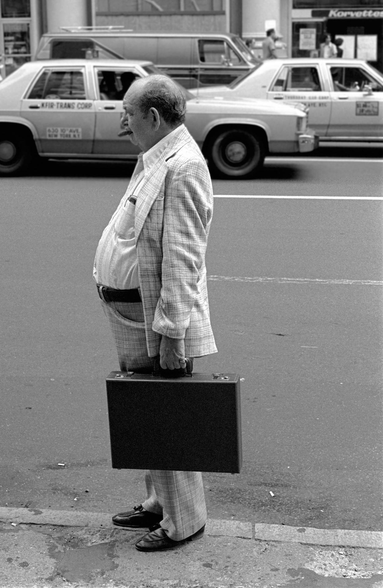

A young woman taking in the scale model for the newly planned World Trade Center. Late 1960s.
A young woman taking in the scale model for the newly planned World Trade Center. Late 1960s.
The 23X bus on John Street, 1972
N Jay Jaffee 5th Ave Subway Station, New York City 1979

Chelsea, 1984
LaGuardia Place and 3rd Street, 1960s
The exam to get a library card used to be pretty grueling. 1970s outside the main branch of the NY Public Library.

60th and Amsterdam, 1973. P.S. 91 in the background.
New York City DOWNTOWN 1970s VINTAGE by Christian Montone on Flickr.
Traffic on W. 35th Street, 1970s

109th street between Columbus and Manhattan Avenues, 1980
Hot dogs and wigs, Harlem, 1970s
Debbie Harry and Chris Stein by Lynn Goldsmith, New York  1978
Subway life, 1984

Somewhere in NYC, 1979

Mickey Spillane outside of the Emerald Tavern. Columbus Avenue, between 69th and 70th.


An ode to Optimo Cigars – NYC’s best chain of newsstands, featuring tobacco products, candy, and even occasionally video games.

Seaport Diner, 1970s NYC. Yum?

Old school graffiti, 1973 Times Square station.

Give a damn.

Wondering what to do about the nosy photographer, 1977 Tompkins Square Park.

Canal Street station, 1980

A kid straight out of a Stephen King story wonders why no one wants to sit near her.
Bon jour, bonne semaine à tous ☕️ 📰
Nouvelles sur le Pont de Brooklyn🗽New York 1963
Photo de Inge Morath
LOL, “your mom is so fat…”

Ruins in the Bronx
Buffed 7 Train, 1981

The IND is Newsbreaker Territory!

Empire State Building, 1981

View from the Empire State Building, 1981

Riding in the 70s
Madison and 64th, 1979

Waiting for the bus, 1981

70s subway, tagged